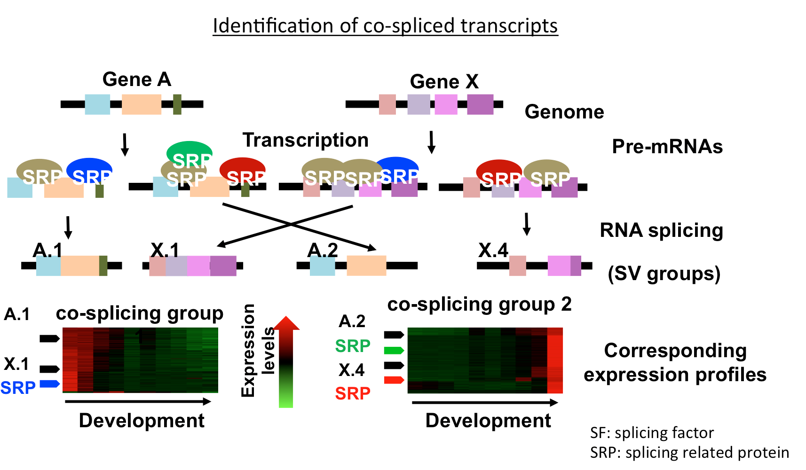
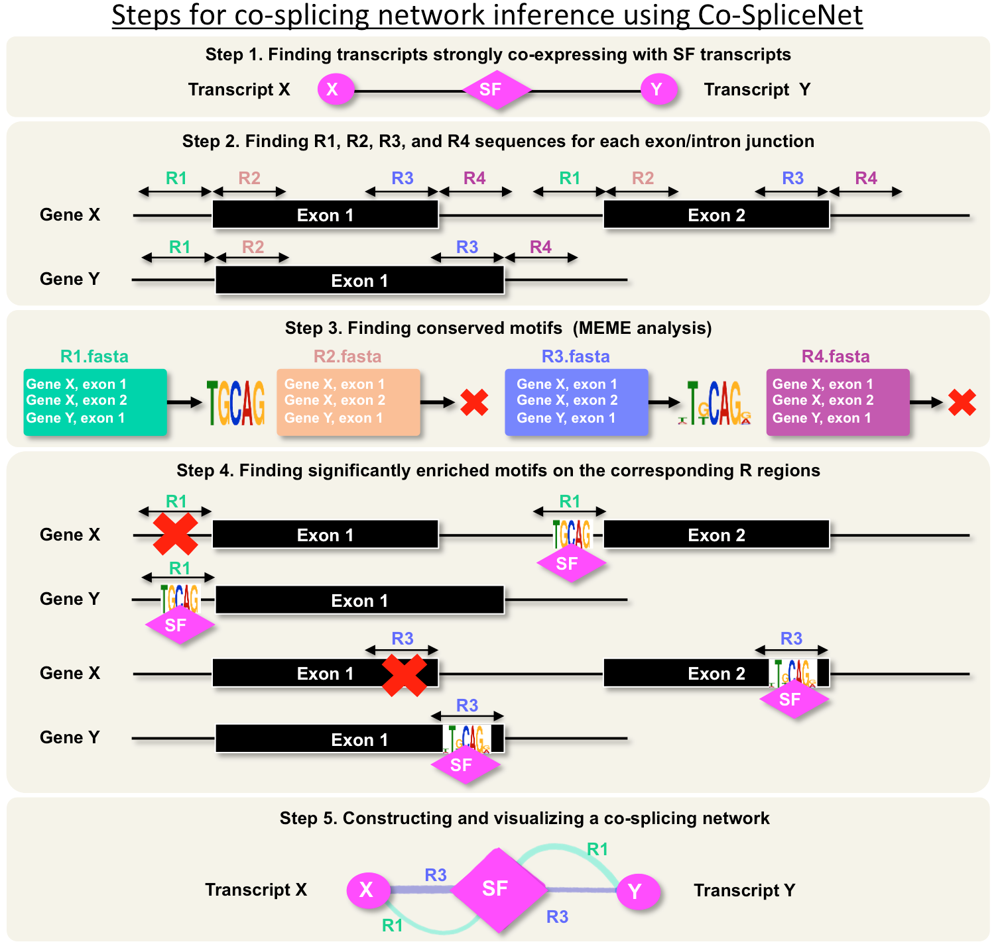

CoSpliceNet
We define co-splicing as the action of the spliceosome on a group of pre-mRNAs to produce a population of coordinately expressed and spliced transcripts. We present Co-SpliceNet as a tool for co-splicing network inference, which can be used to identify splicing factors and their candidate targets pre-mRNAs. Co-SpliceNet can be applied to any transcriptome of any eukaryotic species. Understanding the mechanisms in which splicing occurs can be achieved using CLIP date via capturing RNA binding RNAs for specific splicing factors. However, CLIP experiments are not available for many species yet, but RNA-Seq datasets are available for almost every species.

Project layout
Config.yaml
You can change the configuration of input file names, output path, and parameters for construction of co-splicing networks. Setting part in the config file demonstrates all different parameters used in Co-SpliceNet including R lengths, correlation cutoff, and de novo motif discovery (MEME).
Note: If mode is set to 'demo', only the co-splicing network will be constructed for one SF only.
Inputs
You will need following files for using Co-SpliceNet:
SFs: a list of known splicing factors in your species of interest.
expressions: expressions for splice variants
genome_seq: a fasta file for genome sequences of your species of interest
gtf: a gtf file corresponding the location of splice variants
Note1: SFs files should have a column called "gene_id" which is consistent with expressions and gtf file. Expressions file should have a column called transcript_id and a column called gene_id, followed by some other columns representing expressions. Transcript_id should be unique for each splice variant. All the predictions will be based on transcript_id.
Note2: Sample input files are in the Inputs folder. If you want to use your own input files, you can put them in the inputs folder and then change the config file.
Outputs
expressed_SFs.csv: a list of SFs found in the user's expression data.
coexpression_with_SFs.txt: co-expression file among SFs and targets that meet the correlation cutoff
meme_script.sh: bash file for rerunning the MEME commands and reproducing the results
cosplicing_network.txt: final cosplicing network
Dependencies
Co-SpliceNet has been written in Python. You'll need following packages prior to using Co-SpliceNet:
yaml
scipy
numpy
pandas
biopython
progressbar
Note: the "code" directory is the source root and all the paths are relative to the code directory. If you want to use command line, you should set the python path to the code directory: export PYTHONPATH=$PYTHONPATH://co-splicenet/code/
Usage
python runner.py
** Note: You do not need to set any argument. Make your changes in the config.yaml. **
CoSpliceNet pipeline
Identify splicing factors and splicing related proteins in the expression data
Construct co-expression network between splicing factors and all other transcripts
Extract R1, R2, R3, and R3 sequences (splice junctions) for highly correlated transcripts with a splicing factor
Run MEME for identification of consensus motifs located in the R regions (R1, R2, R3, and R4) of correlated transcripts
Construct co-splicing networks for each SFs and highly correlated transcripts possessing at least one consensus RNA motif
